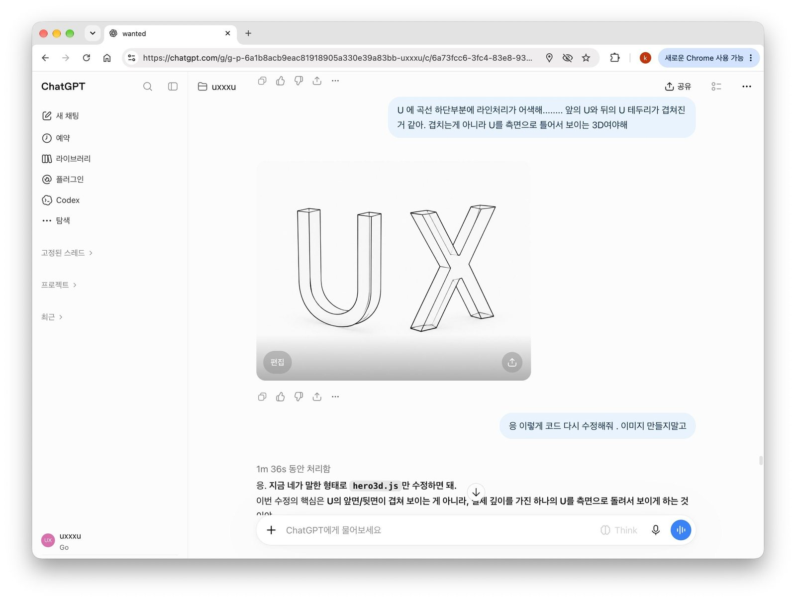
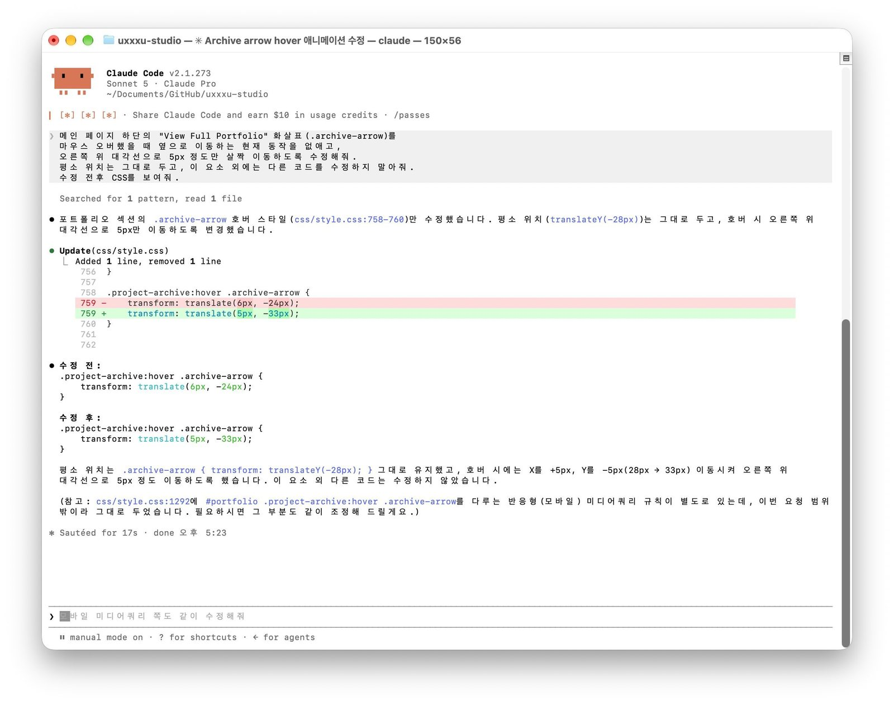
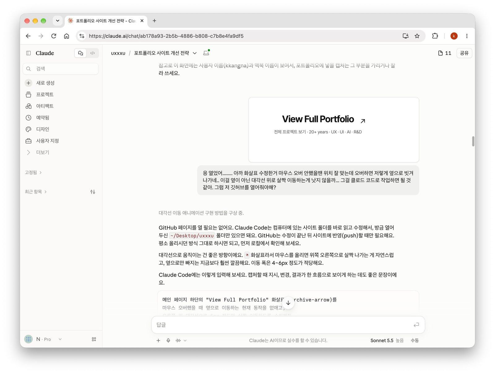
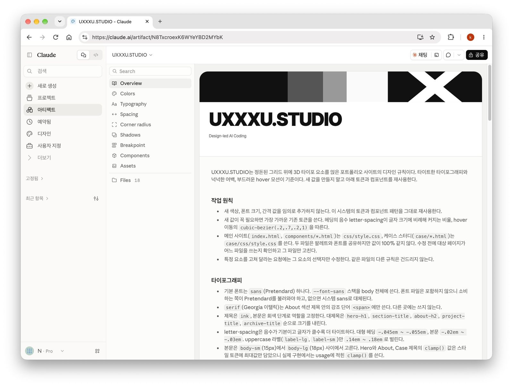
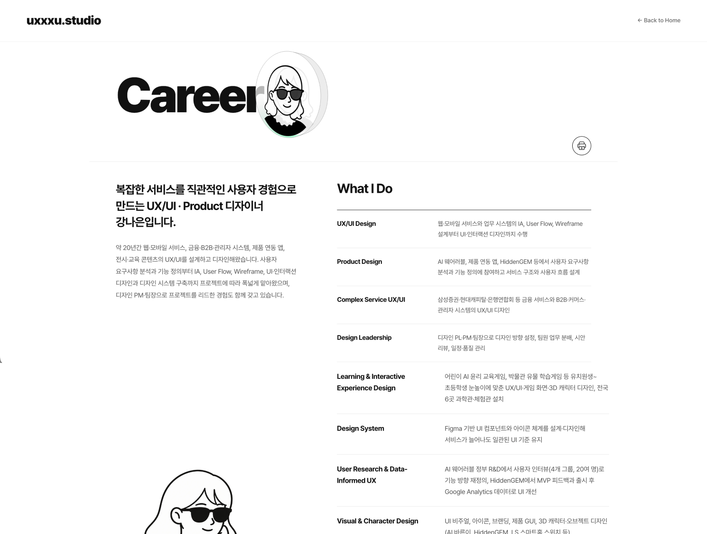
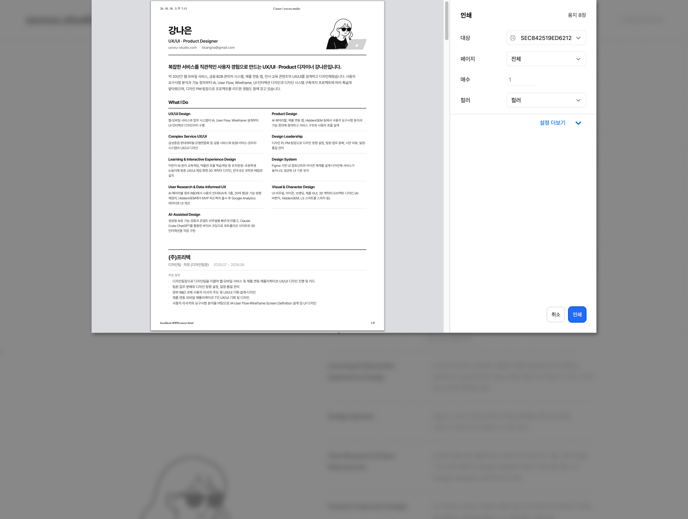

Design-led
AI Coding
디자인 방향은 직접 정하고, 바이브코딩으로 구현한 개인 포트폴리오 사이트 UXXXU.STUDIO
Vibe Coding
ChatGPT
Claude
Three.js
3D Visual
Review
Design System

AI를 활용하되,
디자인 판단은 직접 했습니다.
Figma 시안 없이, 말로 설명하고 결과를 보며 고치는 방식으로
이 사이트를 만들었습니다.
컨셉과 3D 비주얼, 화면의 우선순위는 제가 정하고,
코드 구현은 Claude Code가 맡았습니다.
AI가 만든 결과를 검수해 규칙으로 정리하면서,
디자이너가 방향을 쥔 채 AI와 작업하는 흐름을 만들었습니다.
구현과 반복 수정
HTML·CSS·JS 구현과 수치 조정 같은 반복 작업을 AI에게 지시해 진행했습니다.
방향 · 검수 · 규칙
컨셉과 3D 비주얼을 정하고, 결과를 직접 확인한 뒤 디자인 규칙으로 정리했습니다.
목적별 도구 분리
시각 컨셉은 ChatGPT, 구현은 Claude Code, 검토와 규칙 정리는 Claude에서 진행했습니다.
운영 중인 실제 사이트
포트폴리오 사이트로 공개해 운영하고, 새 페이지도 같은 규칙으로 확장하고 있습니다.
설명하고, 지시하고,
검수하고, 규칙으로 남겼습니다.
작업을 네 단계로 나누고, 단계마다 맞는 도구를 사용했습니다. 아래 지시 예시는 실제 지시 내용을 정리한 문장입니다.
그리드 위에 올릴
3D 타이포 만들기
정돈된 그리드 위에 U·X 3D 글자를 올리는 컨셉을 정하고, ChatGPT와 Three.js로 형태와 질감을 다듬었습니다.
3D 글자 사이의 간격과 윤곽선 두께를 조정해줘. 투명한 질감은 유지하고, 다른 요소는 바꾸지 마.

범위를 좁혀 지시하고
구현하기
한 번에 하나의 요소만 지시했습니다. 수정 범위를 명확히 정해, 다른 화면이 함께 바뀌는 일을 막았습니다.
아카이브 화살표만 수정해줘. hover 시 대각선 위로 이동하게 하고, 다른 규칙은 건드리지 마.

브라우저에서 직접 보고
수치로 다듬기
결과는 실제 브라우저에서 확인하고, 어긋난 부분을 위치와 수치 단위로 짚어 수정했습니다.
화살표 위치를 포트폴리오 텍스트 하단에 맞춰줘. 구조는 그대로 두고 수치만 조정해줘.

반복되는 판단을
규칙으로 남기기
수정하면서 쌓인 기준을 CLAUDE.md로 정리하고, Claude Design System으로 옮겨 이후 작업의 기준으로 삼았습니다.
새 색상·폰트 크기·간격 값을 임의로 추가하지 말고, 기존 팔레트와 컴포넌트 패턴을 그대로 재사용해줘.

타이포·컬러·컴포넌트를
규칙으로 정리했습니다.
구현된 CSS에서 실제로 쓰이는 값만 모아 정리했습니다. 새 값을 만들지 않고 기존 값을 재사용하도록 해, 페이지가 늘어나도 같은 톤이 유지됩니다.
ink·paper와 회색 단계, 구분선, 카드 배경
Header, PillButton, ProjectItem, Footer 등
980px · 767px
헤딩부터 라벨까지 타이포 스타일
웹에서 보던 경력 정보를
출력 가능한 이력서 형태로 전환했습니다.
웹 화면과 인쇄물은 목적이 다릅니다.
Career 페이지는 온라인에서 경력을 탐색하기 위한 화면이지만, 출력할 때는 채용 담당자가 검토하기 편한 이력서 형식이 필요했습니다. 화면을 그대로 인쇄하면 탐색용 요소와 레이아웃이 함께 출력됩니다.
화면 디자인은 유지하고, 인쇄할 때만 이력서 레이아웃으로 전환했습니다.
Career 제목 옆에 인쇄 버튼을 두고, 인쇄 시에는 화면용 요소를 빼고 이름·직무·연락처와 경력 정보를 A4 이력서 형태로 재구성했습니다. 회사와 프로젝트가 페이지 사이에서 끊기지 않게 정리했고, 연락처는 사이트에는 스튜디오 메일, 출력물에는 개인 메일로 나눴습니다.
하나의 Career 페이지를 온라인과 인쇄 환경에서 모두 활용합니다.
별도의 이력서 페이지를 관리하지 않고도, 웹에서는 기존 디자인을 유지하면서 필요할 때 정돈된 이력서로 출력할 수 있습니다.
인쇄할 때만 A4 이력서 레이아웃으로 바뀌게 해줘. 화면 디자인은 그대로 두고.


디자인 판단은 직접,
구현과 개선은 AI와 함께.
시안 없이도 컨셉부터 구현, 검수, 규칙 정리까지 한 흐름으로 진행했습니다.
디자인 의도를 실제 웹 화면으로 구현했고,
정리한 규칙으로 새 페이지도 기존 값만 재사용해 확장하고 있습니다.